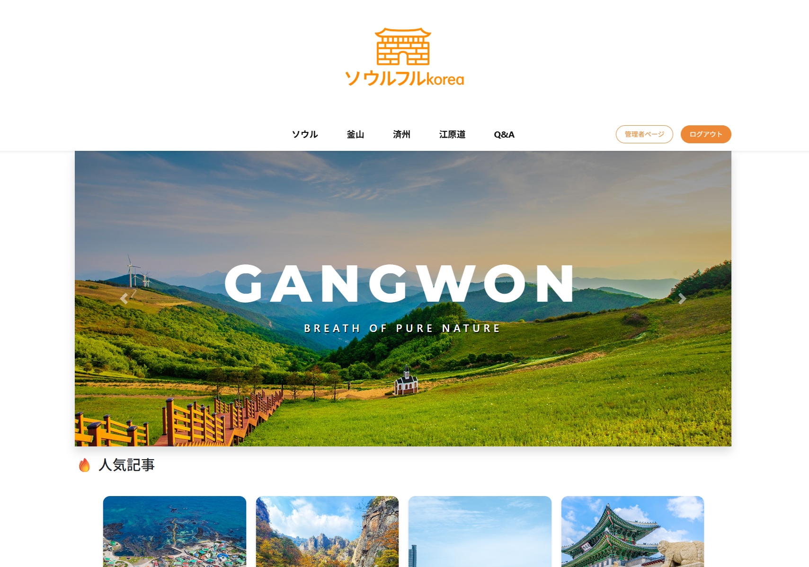
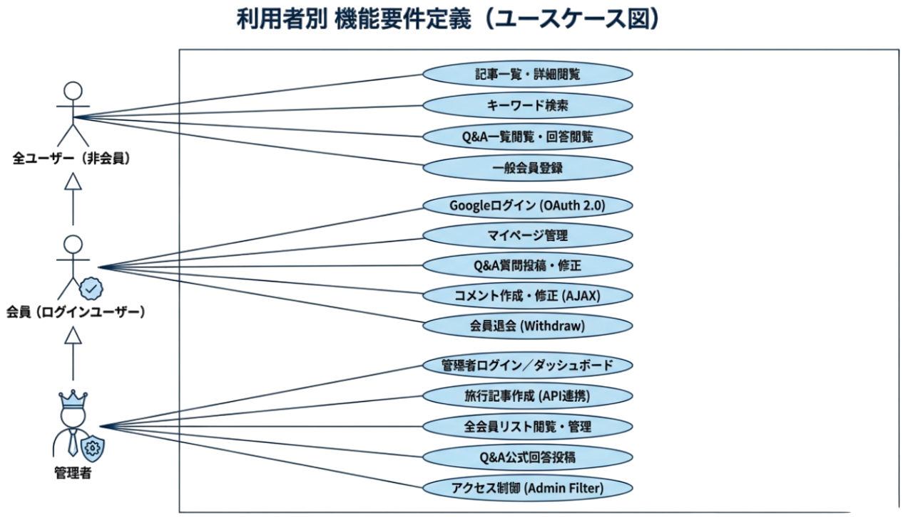

Soulful 旅行ブログ＆コミュニティ
旅行先のおすすめおよびQnAによるコミュニケーションを提供する 個人ブログプラットフォーム
開発目的
Java MVCパターンを基盤としたWebアプリケーションの Full-Cycle開発経験を通じ、実務対応力を身につけること
開発者：高俊成 || 開発期間：2026.01.07～2026.01.14（8日）
企画意図（Concept）
従来型のMVCアーキテクチャをベースに、実務レベルのWebサービスを実装し、
OAuth
2.0や公共データAPIなどの外部ライブラ리連携を通じて、
システムの拡張性およびデータ活用能力を検証することを目的としました。
特に、ユーザー認証の煩雑さを解消し、視覚情報を中心としたコンテンツ提供により、
Webサービスの本質적価値である「利便性」と「情報伝達力」の向上を目指しました。

ユーザー別要件
- 非会員：ポスト閲覧、一覧の閲覧、QnA回答が可能（質問の投稿は不可）
- 会員：Google／一般ログイン、マイページ管理、コメント・QnAの作成／修正／削除
- 管理者：全機能利用可能、公共データ写真APIを活用した旅行記事作成、会員管理、QnA、コメント管理
非機能要件
- AJAXによる非同期通信（ページリロードなし）
- UTF-8を基盤とした多言語対応（日本語対応）
- Admin Filterによる管理者ページのアクセス制御
- Bcryptを用いたパスワード暗号化

MVCアーキテクチャ
- Model：MemberDao / BlogDao / QnaDao / ReplyDao
- View：JSP分離（adm / blog_post / ques）＋共通レイアウト
- Controller：役割別Servlet設計
URL設計（RESTful指向）
- /member/googleCallback.do ：Googleログイン
- /member/memberjoin.do ：一般会員加入
- /post/list.do ：旅行記事一覧
- /post/postview.do ：投稿詳細（閲覧数増加）
- /reply/replyWrite.do ：コメント作成（AJAX）
- /admin/main.do ：管理者ダッシュボード（Filter制御）
セキュリティ設計
- Admin Filterによる管理者専用パス(/adm/*)の一원管理
- Session(userid, role)を利用したリアルタイム ユーザー権限判定
- 権際限のないアクセス時(ADMIN未保有)のメイン画面へリダイレクト
- jBcryptライブラリを活用した一方向パスワードの暗号化と検証
開発環境・技術スタック


- Backend: Java 17 / Servlet 4.0 / JSP
- Server: Apache Tomcat 9.0
- Database: Oracle 11g XE / OJDBC8
- Frontend: HTML5 / CSS3 / JavaScript (ES6)
- UI Framework: Bootstrap 4.6 / jQuery 3.7.1
- JSON Lib: Gson 2.10.1 / JSON-java (20231013)
- Security Lib: jBcrypt 0.4
- View Lib: JSTL 1.2 / Standard.jar
- API: Google OAuth 2.0 / Public Photo API
- AI Tool: ChatGPT / Gemini (Code Assistant)
主要機能デモンストレーション (1/2)
🔐 ユーザー認証（Google OAuth & 一般ログイン）
📝 ブログ投稿 & コメント機能（AJAX）
主要機能デモンストレーション (2/2)
⚙️ 管理者ダッシュボード & 会員管理
🚀 実装フォーカス
- Security: Admin Filterによる権限制御
- Efficiency: AJAXによる非同期データ処理
- 公共データAPIの活用による簡単な投稿
- UX: Google OAuth 2.0 簡単認証システム
学習成果（Learning Points）
- MVCパターンの実践的理解
- OAuth 2.0および外部API連携経験
- AJAXによる動的UI制御
- 問題解決・デバッグ能力の向上
- 保守性を考慮した設計思考の習得
今後の改善点 (Future Improvements)
- Spring Frameworkへの移行：依存性の注入(DI)による保守性の向上
- MyBatis/JPAの導入：SQL管理の効率化とデータアクセスの最適化
- AWSクラウド配備：EC2およびRDSを活用した実務的なサーバー運用
- レスポンシブWebデザイン：モバイル・タブレット環境への完全対応
- セキュリティの強化：JWT導入による認証システムの高度化